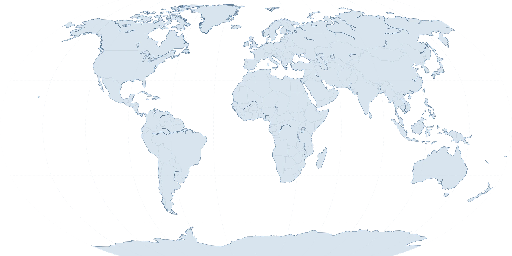

PRIVATE OPERATING PLATFORMACTIVE
Billions in Assets.
One Operating Standard.
Private Assets. Global Operations. Continuous Oversight.
Eish Group Management provides centralized management and operational oversight across a significant global private portfolio.
Our work spans real estate, development, private aviation, marine operations, transportation, worldwide travel, household operations and private experiences.
Discretion
Accountability
Readiness
Execution
OPERATING MODEL
Centralized
One connected structure
NETWORK
Global
Broad regions only
STATUS
Continuous
24 / 7 oversight
ABOUT
Management Built
Around Responsibility.
Eish Group Management was established to provide structure, accountability and continuity across complex private operations.
Significant assets do not operate independently. Residences, projects, aircraft, vessels, transportation, personnel and travel continuously intersect.
Eish Group provides the centralized management infrastructure connecting these responsibilities through one operating platform and one consistent standard.
Today, the organization provides management and operational oversight across billions of dollars in private assets globally.
ONE OPERATING PLATFORM
One structure connecting every responsibility.
Property, development, aviation, marine, transportation, travel, household operations and private experiences are managed as an integrated operating environment—not as disconnected assets.
OPERATING PICTUREUnified
ACCOUNTABILITYAssigned
READINESSContinuous
 ONE OPERATING
ONE OPERATINGSTANDARD
CONNECTED RESPONSIBILITY
Estate & Property
CENTRALIZED OVERSIGHT
One operating picture.
Financial-SaaS clarity applied to complex private operations: priorities, readiness, accountability and continuous activity visible through a single controlled view.
OPERATING NETWORK ACTIVE
CONTINUOUS
Oversight
Across connected responsibilities
EstateProjectsAviationMarine
OPERATING SIGNALLIVE PULSE
CoordinationConnectedDisclosureControlled
RESPONSIBILITY MATRIXONE STANDARD
Estate readinessCoordinated
Project oversightActive
Travel integrationConnected
Private operationsContinuous
OPERATING LOGDELAYED / APPROVED
Cross-market readiness review completedComplete
International program coordination updatedActive
Destination operating picture synchronizedCoordinated
OPERATIONS
Complex assets.
One operating standard.
The website communicates scale, infrastructure, activity and discretion—without exposing private details.
Select an operating division to explore the public-facing scope.
OPERATING SIGNAL
Residential readiness
GLOBAL PRESENCE
Operating Across Markets.
Connected Globally.
New York. Florida. The Hamptons. Israel. Europe. Mediterranean. Worldwide.
Only broad regions are represented publicly. Exact properties, movements and operating details remain confidential.
OPERATING NETWORK
BROAD REGIONS ONLY


REGION
New York
Broad operational presence
Approved public regionConnected operation
ONGOING OPERATIONS
Continuous Oversight.
This is the living part of the website.
Only carefully approved, delayed and non-identifying updates appear here. The purpose is evidence of continuity and standards—never publicity for the principal.
THE EISH STANDARD
The standard remains consistent regardless of location.
Luxury is communicated through restraint, detail, readiness and execution—not decorative excess.
Discretion
Private means private.
Accountability
Every responsibility has an owner.
Readiness
Everything should be prepared before it is required.
Consistency
The standard remains consistent regardless of location.
Detail
Small details determine the quality of the overall experience.
Execution
A plan matters only when it is properly executed.
Trust
Protecting the complete operating picture.
PRIVATE BY DESIGN
Our public presence represents the organization—not the private world behind it.
Discretion is fundamental to Eish Group Management. The organization operates within highly private environments. Our public presence therefore provides a deliberately limited view into our operations.
Information concerning private individuals, residences, movements, personnel and specific assets remains confidential.
PUBLIC
Broad capabilities, approved regions, delayed milestones and non-identifying imagery.
PRIVATE
Exact properties, identifiers, assignments, live movements, schedules and sensitive detail.
PORTAL ONLY
Operational material useful to authorized users but inappropriate for the public site.